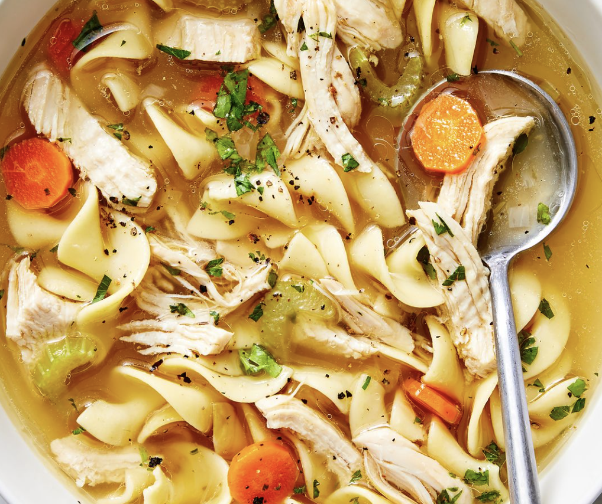
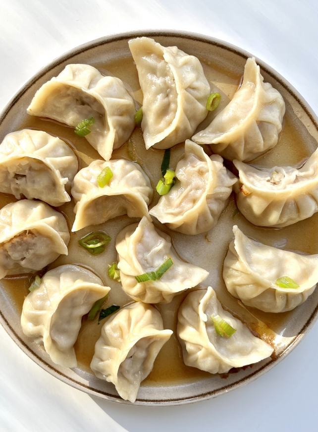
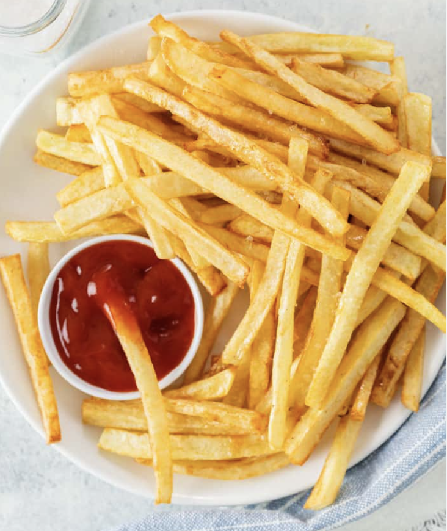

Recipes
Double Chocolate Cookies
Origin
Michigan
Source
Family Recipe
Category
Dessert

My daughter learned to make these cookies at a baking camp at Zingermanns and has tweaked the recipe to fit the taste buds of her siblings. They are extremely sugary so the salt helps to balance it. Note, these cookies are best eaten very quickly.
Recipe Ingredients
- Unsalted butter
- Granulated Sugar
- Packed light or dark brown sugar
- Large egg
- Pure vanilla extract
- Semi-sweet chocolate chunks (melted)
- All-purpose flour
- Natural unsweetened cocoa powder
- Baking soda
- Salt
- Semi-sweet chocolate chunks
Recipe Steps
- In a mixing bowl cream together the butter, granulated sugar, and brown sugar
- Add the egg and vanilla extract and beat well
- Add the melted chocolate
- In a separate bowl combine the flour, baking soda, cocoa powder and salt
- Combine the wet and dry ingredients
- Add the unmelted chocolate chunks.
- Form 15 cookies and place on a baking sheet.
- Cooke for 12 to 13 minutes at 350 degrees.
Curry Chicken
Origin
China
Source
Family Recipe
Category
Entree

This is a recipe that my dad has been making for years. Very delicious.
Recipe Ingredients
- Chicken
- Curry Powder
- Onion
- Garlic
- Carrots
- Potatoes
- Water
- Salt
- Pepper
Recipe Steps
- Chop the chicken into small pieces
- Chop the onion and garlic
- Chop the carrots and potatoes
- Heat up a pan with oil
- Add the onion and garlic and cook until fragrant
- Add the chicken and cook until the outside is white
- Add the carrots and potatoes
- Add water until the chicken is covered
- Add curry powder, salt, and pepper to taste
- Cook until the chicken is fully cooked and the potatoes are soft
Additional Photo Gallery
Chicken Noodle Soup
Origin
China
Source
Family Recipe
Category
Entree
This is a recipe that my grandma used for years. It is a family tradition now to have during the holidays.
Recipe Ingredients
- Chicken
- noodles
- Onion
- Garlic
- Carrots
- Water
- Salt
- Pepper
Recipe Steps
- Chop the chicken into small pieces
- Chop the onion and garlic
- Chop the carrots
- Heat up a pan with oil
- Add the onion and garlic and cook until fragrant
- Add the chicken and cook until the outside is white
- Add the carrots
- Add water until the chicken is covered
- Add noodles, salt, and pepper to taste
Dumplings
Origin
China
Source
Family Recipe
Category
Entree
This is a recipe from China. It is easy to make and very delicious.
Recipe Ingredients
- flour
- water
- ground pork
- chives
- soy sauce
- sesame oil
Recipe Steps
- Make the dough by mixing flour and water
- Make the filling by mixing ground pork, chives, soy sauce, and sesame oil
- Roll out the dough and cut into circles
- Place the filling in the middle of the circle
- Close the dumpling by pinching the edges together
- Boil the dumplings until they float
French Fries
Origin
France
Source
Family Recipe
Category
Side
My all time favorite food. I can eat this everyday.
Recipe Ingredients
- potatoes
- oil
- salt
Recipe Steps
- Chop the potatoes into strips
- Heat up a pan with oil
- Add the potatoes and cook until golden brown
- Add salt to taste